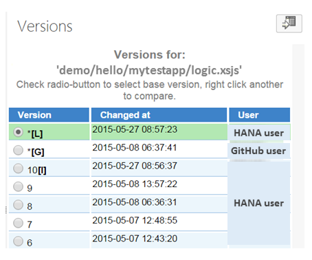

The version history lets you view a list of file versions, compare one version of a file with another one, and revert a file to a previous version.
You can open the version history by choosing Versions from the context menu of a file. The version history is shown in the Versions panel on the right.
To compare one version of a file with another one, select the radio button of one of the file versions (referred to as the base version) and from the context menu of the other file version choose Compare with selected.
The differences in the two file versions are highlighted in a side-by-side display on the compare tab. You can switch to a unified view by choosing Toggle diff view in the Versions panel.
The difference blocks are indicated by a light blue marker on the right of the compare tab, where dark blue shows your current cursor position. You can navigate between the blocks by clicking the markers, the highlighted code lines, or using the arrows (Next diff block, Previous diff block). Additions to the code are shown in green, while deletions are shown in red.
In the side-by-side view, a line between the two panes shows the location of a change in the two files.
From the context menu of the relevant file version, choose Revert to version. You can restore a previous version or a locally cached version.
Version number: Available for active and inactive versions, but not for locally cached versions and GitHub versions.
Inactive version: [l]
Locally cached version: [L]
Deleted version: [D]
GitHub version: [G]
Date and time when the version was changed.
The name of the user who made the change. Depending on the version type, this is either the user’s GitHub user name or their SAP HANA database user name.
Example
The example below shows the version history for a file that has active versions, an inactive version, a locally cached version, and a GitHub version. Note that the locally cached version is listed above its GitHub version, inactive version, and active versions:
